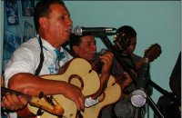

Página inicial > Grupos > Violas de Ouro São Paulo Bagre

Violas de Ouro São Paulo Bagre
quinta-feira 25 de outubro de 2012, por
O grupo "Violas de Ouro" é o mais antigo grupo de fandango de Cananéia, reunindo fandangueiros dos bairros vizinhos Agrossolar e São Paulo Bagre. O grupo é fruto de um processo de passagem de conhecimento entre antigas e novas gerações, que vem se mostrando contínuo nestas comunidades.
“A gente fazia o fandango, na hora que tinha a oportunidadezinha, que os mais velhos começava a confiar no pessoal mais novo. No caso, o Seu João de Deus, a gente aprendeu a tocar com ele. Compadre João Vito às vezes ia no baile, chegava um daqueles mais de idade, que pra acompanhar o pessoal entrava os mais novo, o Quico, eu, dá uma chance pra gente ajudar. E assim que a gente foi aprendendo, com o pessoal mais velho, tocava fandango, ou mesmo cavaquinho, viola, a gente intertia, só não podia tocar errado perto deles, eles não gostavam.” (Paulinho Pereira).
Dos mais velhos, o grupo faz referência ao violeiro, mestre de reiada e de romaria João de Deus, seguido do bandolinista Celso Egídio e dos violeiros Cupertino e Celso Mendonça, este último compositor de modas que fazem parte do repertório do grupo, como “Amanhecia dia de ano”.
Os instrumentos de corda eram em geral feitos por Zildo Franco, conhecido como Pica-pau, cujo irmão, Nelson Franco, herdou o apelido. As violas usadas pelo grupo ainda são as de Zildo. O grupo é o único que utiliza bandolim para tocar fandango. A idéia de constituir um grupo de fandango, em uma época em que não era comum entre os fandangueiros, surgiu após um convite para participação no programa “Viola, minha viola”, presentado por Inezita Barroso, na TV Cultura de São Paulo.
“Numa época, uns dez anos atrás, a gente teve lá em Inezita. A prefeitura fez aí um convite. Acho que foi nessa época, mais ou menos daí pra cá, que a gente começou a pensar em fazer um grupo de fandango, começar a chamar pra tocar. Então, a gente foi em Inezita, apresentou duas modas, que lá o tempo é muito limitado, a gente apresentou duas músicas de fandango e daí em diante a gente começou a pensar no grupo. Todo mundo vinha aqui no barzinho: “Opa, te vi na televisão, lá em Inezita, era você mesmo?”. Aí a gente ficou pensando no grupo.” (Paulinho Pereira).
Os bairros São Paulo Bagre e Agrossolar foram, no passado, palco de muitos fandangos de mutirão, onde sempre havia o batido, em modas como queromana, sinsará, lagarto, andorinha, serrana, tonta, feliz, tiraninha, nhaninha.
O repertório do Violas de Ouro envolve, entretanto, apenas modas bailadas e o grupo não sabe precisar quando o batido deixou de ser feito. “O negócio das músicas sertanejas... Depois pra começar, apareceu a televisão, já mostrando aquelas coisas ali, e o povo ninguém quis mais saber, vamos dizer, de caipira.
Mas esse é bonito, mas pra aprender não é fácil, não é tudo que aprende, às vezes o cara acha bonito. Então, foi esse o ponto que o pessoal desacreditou das coisas.” (João Vito).
Por estar há tantos anos em atividade, o Violas de Ouro tem um papel importante em Cananéia. O grupo nunca deixou de participar das festas da cidade, em especial das festas religiosas. A persistência e o gosto pelo fandango serviram de estímulo e inspiração para os tantos grupos que se formaram no município.
A cultura e a religião dos bairros de São Paulo Bagre e Agrossolar foram tema das dissertações acadêmicas “São Paulo Bagre – O imaginário religioso num bairro rural de Cananéia”, de Elza Scarpin, defendida em 1991, na Universidade de São Paulo, e “O ciclo das festas: uma leitura cênica das dança do fandango e das festas populares de Cananéia, litoral sul do Estado de São Paulo”, de Renata Bittencourt Meira, defendida em 1997, na Universidade de Campinas.
Em 2003, participaram da publicação “São Paulo de Corpo e Alma”, organizada pela Associação Cultural Cachuêra.
Além de João Vito (rabeca), Paulinho Pereira e Quico (violas), a formação atual é integrada por Dácio Venâncio (bandolim), Jânio Carlos de Souza (pandeiro) e Laerte Veríssimo Barbosa (zabumba).
O bandolinista do grupo, Dácio Venâncio Colaço, nasceu em 1954, em Agrossolar. É filho de Maria do Rosário Lisboa e Afonso José Lisboa, ex-rabequista do grupo e integrante também da romaria. Seu avô, Valdelino José Lisboa, fazia instrumentos e seu pai, tamancos de caxeta para bater o fandango. Toca também viola, pandeiro, zabumba (ou surdo) e rabeca.
Jânio Carlos de Souza, pandeirista, nasceu em São Paulo Bagre, em 1961. É filho de Antônio de Souza e Maria do Rosário de Souza. Seu avô João Silvino Mendonça, fazia instrumentos. Laerte Veríssimo Barbosa, zabumbeiro, nasceu em 1965, em São Paulo Bagre. Filho de João Veríssimo Barbosa e Maria Marta de Souza Barbosa.
 Fonte: Museu Vivo do Fandango
Fonte: Museu Vivo do Fandango
 Fotos: Rafael Xavier
Fotos: Rafael Xavier


{kind=link}
{kind=link}
{kind=link}
{kind=link}
{kind=link}
{kind=link}
{kind=link}
{kind=link}
{kind=link}